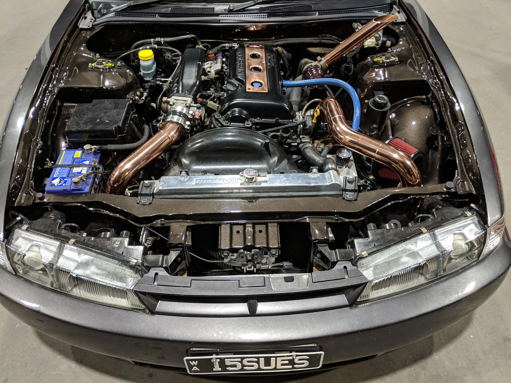

მე ეხლა NISSAN SILVIA S14 KOUKI-ის ძრავებზე გეტყვი რაღაცეებს
NISSAN SILVIA S14 KOUKI 2.O MOTOR
2.0-ლიტრიანი ოთხკუთხა ძრავა S14-ს ამუშავებდა ორ გემოში: SR20DE და SR20DET. SR20DE ძრავა გამოიმუშავებდა 150 ცხენის ძალას ნორმალურად ასპირაციით, ხოლო SR20DET ძრავა აწარმოებდა 200 ცხენის ძალას ტურბო დამუხტვით. ორივე ძრავა დაწყვილებული იყო ხუთ სიჩქარიან მექანიკურ გადაცემათა კოლოფთან. Nissan-მა აირჩია S14-ის განახლება მხოლოდ რამდენიმე წლის შემდეგ. 1996 წელს სილვიამ მიიღო უფრო აგრესიული წინა ნაწილი, ფარები და კორპუსის მორთვა, რამაც გააუმჯობესა თამამი გამოსახულება. მიუხედავად იმისა, რომ დიდწილად კოსმეტიკური ცვლილებები განხორციელდა Silvia-ში, Nissan-მა დაამატა უფრო ეფექტური ბურთებზე დაფუძნებული ტურბო დამტენი.
[Engine-SR20DET 2.0L Turbocharged I4]
[Horsepower-220-250 hp (depending on trim)]
[Torque-203-236 lb-ft (depending on trim)]
[Transmission-5-speed manual]
[Drivetrain-Rear-wheel drive]
[Suspension-Front MacPherson struts, Rear multilink]
[Brakes-Disc brakes (vented front)]
[Wheels-15-inch alloy wheels]
[Weight-2,750-2,850 lbs (depending on trim)]
[0-60 mph-5.2-5.7 seconds (depending on trim)]
[Top Speed-140-149 mph (depending on trim)]
[Fuel Economy-18-22 mpg city / 25-28 mpg highway]
{SR ძრავა არის 1,6 ლიტრი (1,596 კუბ.), 1,8 ლიტრი (1,838 კუბ) ან 2,0 ლიტრი (1,998 კუბ) სწორი ოთხტაქტიანი ბენზინის ძრავების სერია, რომელიც წარმოებულია Nissan-ის მიერ. მას აქვს ალუმინის თავი და ბლოკი ფოლადის ყდაებით და აქვს DOHC 4-სარქველიანი დიზაინი, ცვლადი სარქვლის დროით შერჩეულ მოდელებზე.
ძრავა გამოიყენებოდა ბევრ მცირე და საშუალო Nissan მანქანაში, მათ შორის მაღალი ხარისხის ტურბო ვერსიებში. ის შეიქმნა Nissan-ის მიერ, როგორც წინა CA სერიის ძრავების შემცვლელი და შეიცვალა QR და MR სერიების ძრავებით. გამომავალი სიმძლავრე ნაჩვენებია JIS Net PS ან ECE Net კილოვატებში, თუ სხვაგვარად არ არის მითითებული.}
